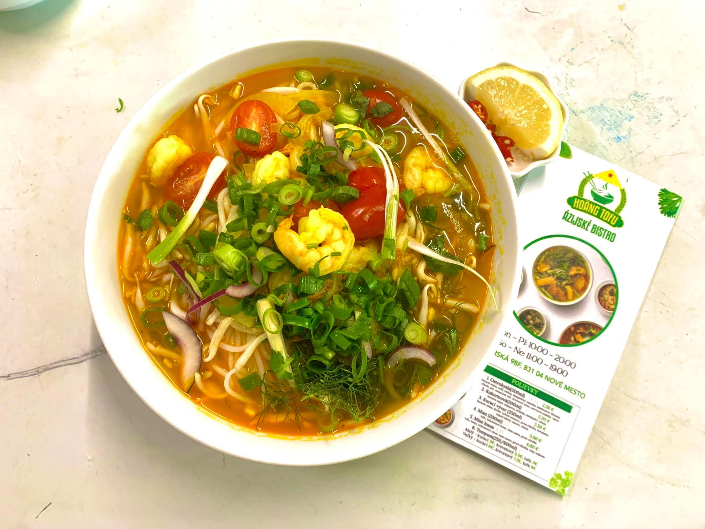

★★★★★
Chutné jedlo, veľké porcie a príjemná obsluha. Sushi aj vietnamské jedlá boli čerstvé.
VIETNAMSKÁ CHUŤ
PRE KAŽDÉHO
Tradičná vietnamská rybacia polievka plná chutí a čerstvých byliniek
OBJEDNAJTE SI
REVIEW
Vaša spokojnosť je našou prioritou. Ďakujeme za každú návštevu a objednávku.
Chutné jedlo, veľké porcie a príjemná obsluha. Sushi aj vietnamské jedlá boli čerstvé.
Objednávka bola pripravená rýchlo. Pho polievka mala výborný vývar a veľa byliniek.
Výborné tofu, rezance aj sushi bowl. Oceňujem čisté balenie a dobrú komunikáciu.
Na obed sem chodíme často. Jedlá sú stabilne dobré a ceny sú férové.
KONTAKT
Otázky, osobný odber alebo rezerváciu stola vybavíme najrýchlejšie telefonicky.
+421 950 614 298